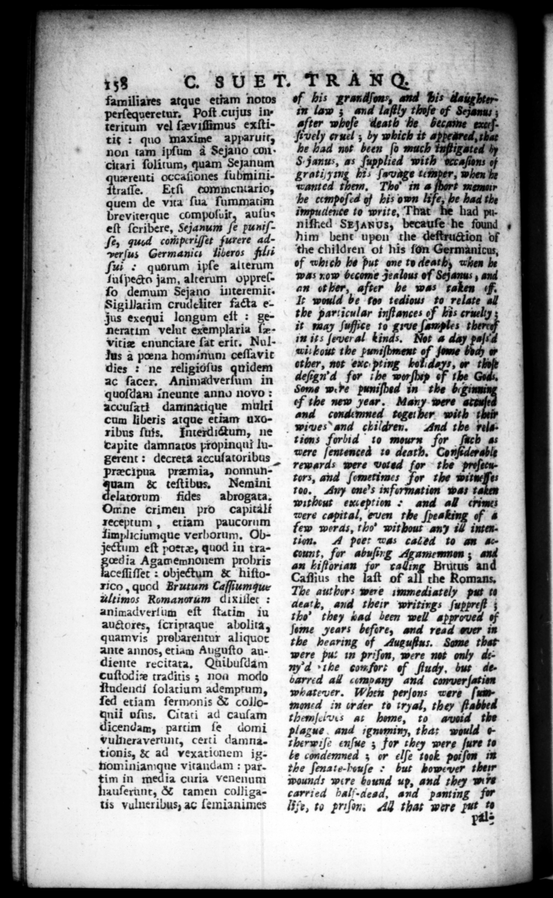

158 R I familiares atque etiam notos of his grandſons, and Bis daughter — Poſt cujus in- 1 law ; and laſtly thuſe of Sezanu ; tericum vel ſæviſſimus exſti- ter whoſe death he becaine exirſtit: quo maxime apparuit, ö vely ermel ; by which it appeared, that non tam ipſum 4 Sejano con- be had net been ſo much Tuſtigated by citari ſolitum, quam Sejanum S. janus, as ſupplied with h of uzrenti occaſiones ſubmini- grati/7mg li, ſavage 755 when he E trale. Etſi commentario, wTanted them, Tho" im @ ſhort mam — de vita ſua ſummatim he cempoſed of his own bi pe her breviterque compoſuir, auſus aence to write, T eſt ſoribere, Sejanum fe puniſ. Niſked Sxjanus, becauſe he found 4 ſe, qued comperiſſet furere ad- him bent upon the deſtruction of verſus Germania liberos filis the children ot his ſon Germanicus, ſui . quorum iple 1 9 —— — put - Wen pi jut jam, alter reſ- nom become Jea anus r an ot her, after he was laden F. ſo demum Sejano interemit. | . Sigillatim Rau. * facta e- I; would be foo tedious to relate all Jus exequi longum eſt : the particular inſtances of kis cruelty : 8 velut — it may ſuſſice to * amples the ; vitiæ enunciare {at eric. Nul- 13 ſever al tin s, Not à day paſid tus a pœna hominum ceſſavit —— . of Jome * 8 . . » 2 , , 1 ö ies : ne religioſus quidem defend fer be ig ac facer, Animadverſum in be pn das ths *. with 75 quoſdam ĩneunte anno novo: be I accuſati damnatique multi — maar? and: do — — ng n 6 wiwes and children, And the bels. capite ed, cropingut ln. tions forbid to mourn for ſach « gerent : decreta accuſatoribus I. — —— —— Ppræcipua 1 i tors, and ſometimes for the — 2 c —— —— roo. Any one's information was On : : Without exception + and all crime ne crimen pro capitalt mere capital, even rhe ſpeaking of 4 xeceptum , etiam paucorum fem werds, 1 he. without any if intexJimpliciumque verborum. Ob- zin. 4 peer was dada to an #ejeckum eſt potrae, quod in tra- et, for abuſing Agamenmen dia Agamemnonem probris 42 kiftorian As . « — an ceſlifſer : objectum 8 hifto- Caſſius the of all che Romans, kg” Brutum Caſſiumque Ty, aut bur: were immediately pus co timos Romanorum dixillet: aar, and their writings ſuppreſt ; animadverium eſt ſtatim iu 25 they dad been well approved of auctores, icripraque abolita, je years befire, and read ever it quamvis prebarentur aliquot 7he hearing of Auguſtus. Some that Ante annos, et iam Auguſto Au- were pu: 1 priſon w-re not 5 diente recitata, Quibuſſam / be con fort of fudy. bus decuſtoCiz traditis; noa modo barred at company and conver ſation Rudendi ſolatium adempram, whatever. When perſons were ſuit Ted etiam ſermonis & collo= goned in wader to iryal, they ftabbed uu uſus. Citaci ad cauſam themſeives A. home, to a uoia the dicendam, partim fe domi plague . and ignminy, that would & vulneraverunt, certi damna- therwiſ: enſue ; for they were ſure to tionis, & ad vexationem ig- te condemned ; or elſe took poiſon in nominiamque vitandam: par. the ſenate-bouſe > but bome ver ther — in media curia venenum wound were bound up, and they wire nuſerunt, & tamen colliga- carried balf-dead, and panting tis vulneribus, ac ſemianimes Ve, to priſon; All that were fut 2
